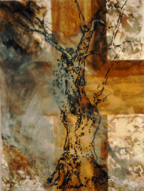

Gethsemane Olive

This tree is located on the island of Guidecca which is right across a rather large canal from Venice. When I visited the Monastery of the Redentore Church , and saw the tree there,
I was told that the tree came from the Garden of Gethsemane, but I don't know its exact age or size. Since the tree has a religious reference, I painted it on a cross.
© June Julian 1997
"Gethsemane Olive"
Watercolor on Paper, 1995
 Return to Main Page
Return to Main Page
Comments
Please send e-mail to: June Julian jj68@nyu.edu